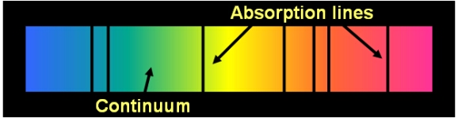

A spectral continuum occurs when the interactions of a large number of atoms, ions or molecules spread out all of the discrete emission lines of an object, so they can no longer be distinguished. The spreading of spectral lines is due to a range of spectral broadening effects including thermal Doppler broadening, collisional broadening and Doppler shifts due to the bulk motion of particles along the line-of-sight.

For a celestial body (such as a star or cloud of interstellar gas) which is in thermal equilibrium, the continuum emission approximates a blackbody spectrum, with a peak in emission at a wavelength determined by the object’s temperature. Absorption lines are usually seen as dark lines, or lines of reduced intensity, on this continuous spectrum.

Dataset: VizieR catalogue III/219, Spectral Library of Galaxies, Clusters and Stars (Santos et al. 2002)